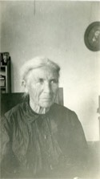

Contents
Home
Surnames
Index
Sources
Contact
Search
Blickensderfer and related families - Family Card
Blickensderfer and related families - Family Card
Jacob ROMIG
(20 Apr 1806 - 17 Feb 1871)
Susannah Amelia FREDERICK
(31 Oct 1805 - 8 Nov 1846)
Josiah Benjamin ROMIG
Amanda Catherine DEMUTH
b.
1836
d.
1918
bur.

b.
1839, Tuscarawas County, Ohio
d.
1923, Sedro, California
bur.
Children
Francis William ROMIG
Jacob Ulyses ROMIG
(4 Mar 1869 - )
Leanora A. ROMIG
Mary Carrie ROMIG
This collection of files last generated on 14 Jul 2025.
Main page
•
Links
•
Search